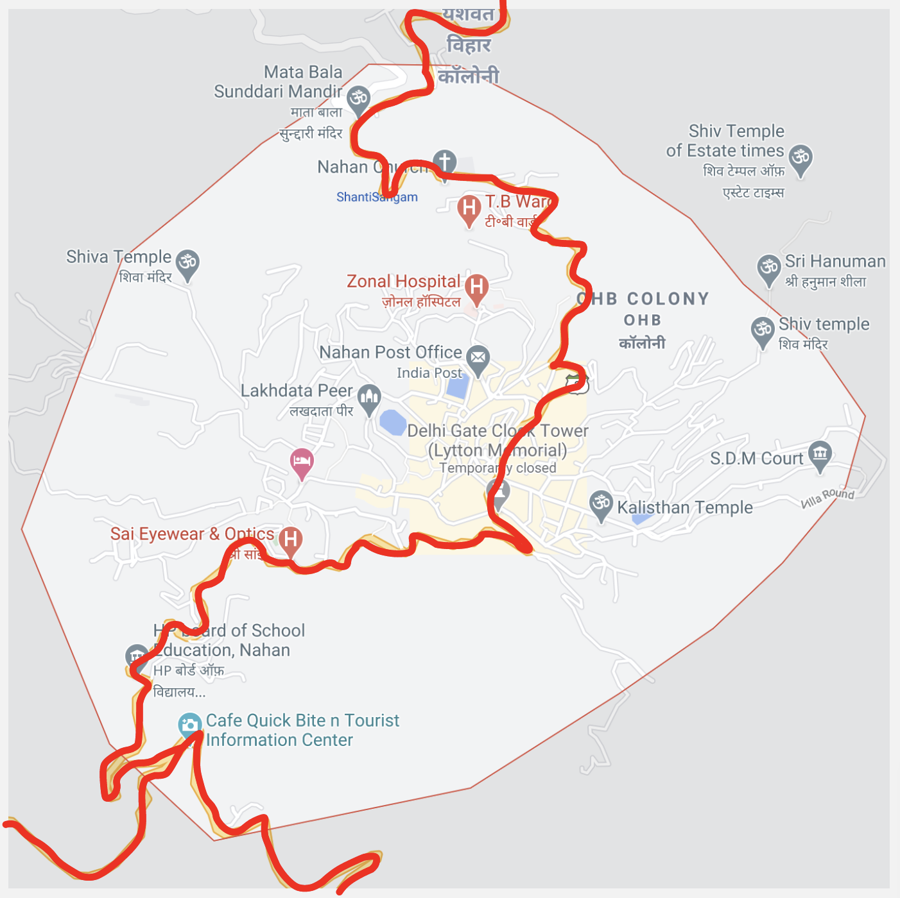
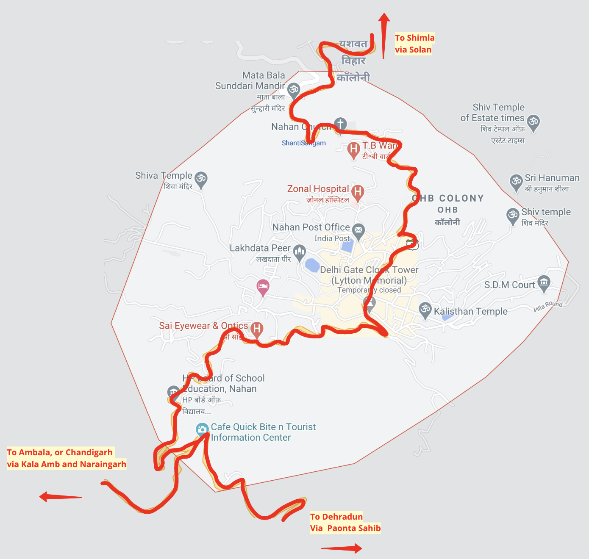

A map for travellers visiting the town of Nahan in Himachal Pradesh.
Nahan is a town and the capital of district Sirmour, Himachal Pradesh. It lies in the Shivalik ranges (lower himalayas), towards the southern part of Himachal. In this project, I picked this town and created a map that would help people, tourists, or other travellers, move in and around the town, as well showcase the roads to nearby cities.
Process
I began by picking an image of the town’s map from Google Maps.
And proceeded with charting out the main roads that go through the city. [National Highway 7 and National Highway 907A]
Then I added the cities they lead towards.
Here's the rough map sketched out.

I proceeded to try and abstract the above.
I switched to the digital medium and traced on the map, abstracted the shapes with a hexagonal grid, and rounded off the edges.
Next, I cleaned the map up a bit. I included an arc for a location that goes by the name of 'vila round' (lower right corner), which is a popular location for walks. I placed icons and labels, map descriptions, and the legend.
Based on feedback recieved from the project guides, I included the road hierarchies, detailed labelling, and some zones of the town.